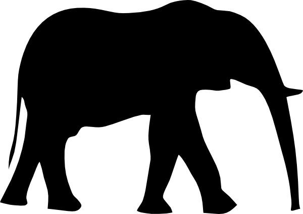
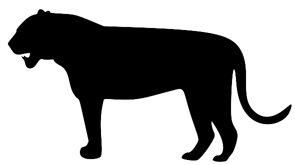
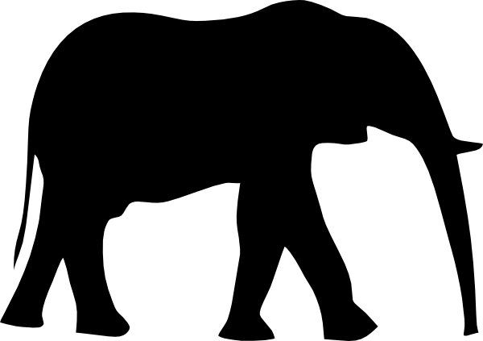
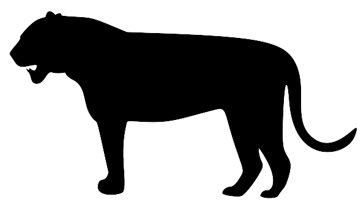
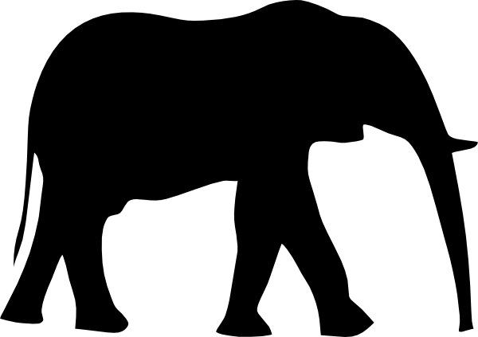
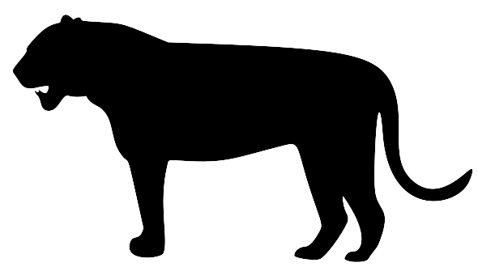
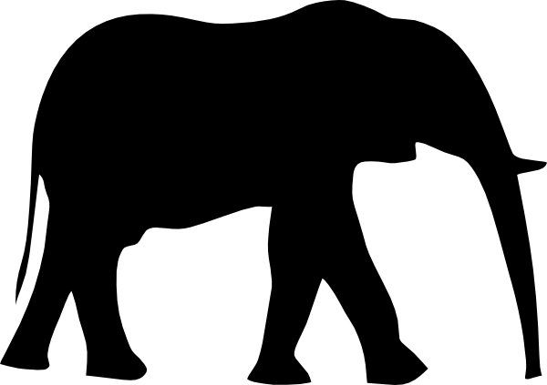
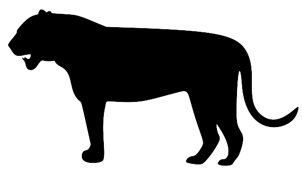

ANIMALS
 



What is an animal?
Animals are multicellular eukaryotes whose cells are bound together by collagen. Animals dominate human conceptions of life on Earth because of their size, diversity, abundance, and mobility. The presence of muscles and mobility is one of the primary characteristics of the animal kingdom.
As of 2022, around 2.16 million living animal species have been described of which around 1.05 million are insects, over 85,000 are molluscs, and around 65,000 are vertebrates.
Why is animals important?
Animals improve the welfare of humans in many ways, ranging from providing companionship, improving mental health, facilitating rescues during natural disasters; and finally, for a number of species, as food. Dogs used in therapy, and as aids for people with disabilities, provide important benefits.
Without plants and animals, our lives would not be possible. Oxygen, clean water and soil, and our earliest tools, food, and clothing came from flora and fauna. Even our fossil fuels are the result of Paleozoic Era ecosystems that captured the sun's energy-the same energy that we are now using billions of years later.
The most popular animal in the world.
White-tailed deer are browse for food at dawn and dusk. White-tailed deer have good eyesight and hearing. more...
Foxes are small to medium-sized, omnivorous mammals belonging to several genera of the family Canidae. more...
Owls are birds from the order Strigiformes which includes over 200 species of mostly solitary and nocturnal birds of prey more...
White-tailed deer are browse for food at dawn and dusk. White-tailed deer have good eyesight and hearing. more...
The gorilla is one of the two subspecies of the eastern gorilla. more...
The capybara or greater capybara is a giant cavy rodent native to South America. It is the largest living rodent and more...
The lion is a large cat of the genus Panthera, native to Africa and India. It has a muscular, more...
The tiger is the largest living cat species and a member of the genus Panthera. more...
A caiman is an alligatorid belonging to the subfamily Caimaninae, one of two primary lineages within the Alligatoridae family, more...

The scarlet macaw is a large yellow, red and blue Neotropical more...
The chimpanzee, also known as simply the chimp, is a species of great ape native to the forests and savannahs of tropical Africa. more...
Snakes are elongated, limbless, carnivorous reptiles of the suborder Serpentes. more...